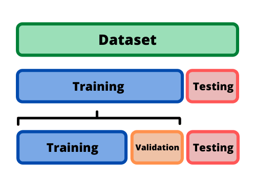

Taller de Tidymodels
¡Hola!
Me llamo Aitor González.
Soy estadístico en la Unidad de Bioestadística de la Facultad de Medicina de la UAB.
¡Hola!
Me llamo Aitor González.
Soy estadístico en la Unidad de Bioestadística de la Facultad de Medicina de la UAB.
También explico cosas de estadística en mi canal de YouTube ReEstimando.
2. ¿Porqué Tidymodels?
2.1. Un poquito de historia
Max Kuhn
2.1. Un poquito de historia
- En 2008 desarrolló la librería Caret, la cual asentó las bases del modelado estadístico en R.
2.1. Un poquito de historia
En 2008 desarrolló la librería Caret, la cual asentó las bases del modelado estadístico en R.
El paquete cuenta con más de 7.000 citas en publicaciones académicas.
2.1. Un poquito de historia
Caret fue un éxito debido a que unificó la sintáxis de los principales paquetes de modelado en R.
Además, incluía varias funciones para automatziar procesos necesarios en cualquier modelo.
Por ejemplo, una función que haga una partición en los datos: un conjunto de entrenamiento y otro de prueba (training y test).
2.1. Un poquito de historia (2)

- En 2012 aparece el entorno de Tidyverse de la mano de Hadley Wickham.
2.1. Un poquito de historia (2)

En 2012 aparece el entorno de Tidyverse de la mano de Hadley Wickham.
Tidyverse proporciona múltiples herramientas para poder manipular datos facilmente.
Se ha convertido en uno de los paquetes más populares de R y de la ciencia de datos.
Tiene una sintáxis fácil y fluida que se enfoca más en la resolver necesidades que en la programación.
2.1. Un poquito de historia (3)
- En 2019 Max Kuhn se une al Tidyverso y comienza a crear Tidymodels junto con el equipo de Hadley Wickham.
2.1.Un poquito de historia (3)
En 2019 Max Kuhn se une al Tidyverso y comienza a crear Tidymodels junto con el equipo de Hadley Wickham.
Actualmente Julia Silge es, junto con Max Kuhn, la principal desarrolladora de Tidymodels.
2.2. Un breve ejemplo
2.2. Un breve ejemplo (2)
2.3. ¿Qué aporta Tidymodels?
No más Caret: el paquete no tendrá más actualizaciones, sólo mantenimiento
Consistencia: Misma sintáxis para todos los procesos
Replicabilidad
Comunicación: Los outputs de Tidymodels siguen la lógica de Tidyverse
Exportabilidad: Junto a Plumber y Vetiver se pueden poner los modelos en producción
Posibilidades: Tidymodels da soporte a 155 modelos, incluyendo modelos para datos censurados o series temporales
3. ¿De qué se compone Tidymodels?
3. ¿De qué se compone Tidymodels?
- El flujo de trabajo de Tidymodels es el siguiente:
3. ¿De qué se compone Tidymodels?
- La idea detrás consiste en una sola sintaxis que resuma todo este flujo de trabajo.
Partición de los datos
Pre-procesamos los datos de entrenamiento
Buscamos los hiper-parámetros ideales para nuestros datos en el modelo
Ajustamos el modelo
Comprobamos con las métricas
Vemos si funciona con unos datos que el modelo no haya visto
3. ¿De qué se compone Tidymodels?

- Rsample: Funciones para crear distintos tipos de remuestreos.
- Recipes: Preprocesador de datos, simplifica el proceso de preparado de datos para cualquier modelo.
- Parsnip: Interfaz para ajustar modelos, hasta 155 tipos a fecha de esta presentación
- Yarstick: Creación de métricas para la evaluación de un modelo.
- Workflows: Cohesión interna de tidymodels.
- Tune & Dials: Creación y gestión de hiper-parámetros de cualquier modelo presente en Tidymodels.
4. Presentando los datos
4.1. Caso práctico
Somos unos expertos en aprendizaje automático y nos piden ayuda de un hospital üè•
Al parecer, nuestra variable, Var_respuesta, es una enfermedad complicada de diagnosticar.
Los médicos han hecho un estudio caso-control en el que se miran unas cuantas variables; y al cabo de un año se da un diagnostico definitivo de Var_respuesta.
Haremos una modelizaci√≥n de tipo clasificatoria binaria, es decir de 2 niveles: o tiene la enfermedad o no la tiene. üëç/üëé
Además de de nuestra variable Var_respuesta, tenemos otras 25 variables: de cognición, bioquímicas, genéticas, etc.
4.1. Caso práctico
# Librerías | Carga de datos
if(!require('pacman')){install.packages('pacman')}
pacman::p_load(
readxl, # Lectura de los datos
tidyverse , # Acceso al entorno de procesamiento "tidyverse"
tidymodels, # Acceso al entorno de modelado "tidymodels"
agua, # Modelaje de entorno h2o
themis, # Soporte de la librería "recipes" para añadir sobremuestreo
skimr, # Descriptiva rápida de datos
naniar,
ranger,
knitr # Renderización en html para este formato
)4.1. Caso práctico
- Antes de empezar, podemos ver la estructura del dataset:
| Var_respuesta | Edad | Cognicion_01 | Cognicion_02 | Cognicion_03 | Cognicion_04 | Cognicion_05 | Bioquimica_01 | Bioquimica_02 | Bioquimica_03 | Bioquimica_04 | Bioquimica_05 | Bioquimica_06 | Bioquimica_07 | Bioquimica_08 | Bioquimica_09 | Bioquimica_10 | Bioquimica_11 | Escala_01 | Escala_02 | Escala_03 | Genetica_01 | Genetica_02 | Genetica_03 | Genetica_04 | Genetica_05 | Genetica_06 | Genetica_07 |
|---|---|---|---|---|---|---|---|---|---|---|---|---|---|---|---|---|---|---|---|---|---|---|---|---|---|---|---|
| 0 | 14 | 101.82 | NA | NA | NA | NA | NA | NA | 5.65 | 13.65 | 125.71 | NA | NA | 84.29 | 1.48 | 30.35 | 35.68 | 0.00000 | 28.397013 | 7.363183 | NA | 0.9665678 | NA | NA | 1.2921746 | 0.2417377 | NA |
| 0 | 17 | 80.41 | 85.53 | 55.68 | 124.52 | 159.70 | 62.37 | NA | 5.65 | 17.83 | 154.53 | NA | NA | 99.42 | 1.34 | 33.99 | 33.01 | 138.73119 | 16.769985 | 17.764831 | 0.4550571 | NA | NA | NA | NA | NA | 0.0044324 |
| 0 | 14 | 91.00 | 79.76 | 94.28 | 140.68 | 100.07 | 86.33 | 26.24 | 3.18 | 13.09 | 135.88 | 81.53 | 5.75 | 109.45 | 0.95 | 30.44 | 34.21 | NA | 21.382220 | 7.061147 | NA | NA | NA | NA | NA | NA | NA |
| 0 | 21 | 86.99 | 91.33 | 93.65 | 115.00 | 123.01 | 66.84 | 10.23 | 3.48 | 11.97 | 132.15 | 90.66 | 2.58 | 68.60 | 1.04 | 30.10 | 34.00 | 48.83394 | 7.785552 | 20.442332 | NA | NA | NA | NA | NA | NA | NA |
| 1 | 33 | 78.83 | 104.19 | 42.68 | 112.97 | 179.16 | 59.51 | NA | 4.05 | 13.99 | 118.33 | 114.46 | 3.03 | 62.87 | 1.14 | 22.08 | 33.50 | 33.37826 | 28.165315 | 28.817018 | NA | 1.0690024 | 0.0339304 | 0.7820054 | 0.3230982 | NA | 0.3998781 |
4.1. Caso práctico
| Name | datos |
| Number of rows | 285 |
| Number of columns | 28 |
| _______________________ | |
| Column type frequency: | |
| factor | 1 |
| numeric | 27 |
| ________________________ | |
| Group variables | None |
Variable type: factor
| skim_variable | n_missing | complete_rate | ordered | n_unique | top_counts |
|---|---|---|---|---|---|
| Var_respuesta | 0 | 1 | FALSE | 2 | 0: 227, 1: 58 |
Variable type: numeric
| skim_variable | n_missing | complete_rate | mean | sd | p0 | p25 | p50 | p75 | p100 | hist |
|---|---|---|---|---|---|---|---|---|---|---|
| Edad | 9 | 0.97 | 22.33 | 6.47 | 8.00 | 17.00 | 21.00 | 27.00 | 39.00 | ▂▇▆▅▂ |
| Cognicion_01 | 0 | 1.00 | 86.51 | 29.37 | 0.00 | 78.50 | 90.56 | 103.13 | 143.84 | ▁▁▅▇▂ |
| Cognicion_02 | 82 | 0.71 | 90.22 | 12.98 | 55.23 | 80.74 | 90.43 | 98.98 | 129.15 | ▁▆▇▃▁ |
| Cognicion_03 | 57 | 0.80 | 77.62 | 17.80 | 35.22 | 65.91 | 76.77 | 88.23 | 130.09 | ▂▇▇▃▁ |
| Cognicion_04 | 64 | 0.78 | 134.85 | 51.16 | 15.31 | 97.17 | 137.91 | 172.32 | 245.38 | ▂▅▇▆▂ |
| Cognicion_05 | 70 | 0.75 | 126.23 | 44.38 | 53.89 | 94.13 | 120.96 | 155.32 | 249.33 | ▆▇▆▂▁ |
| Bioquimica_01 | 54 | 0.81 | 75.94 | 14.24 | 42.80 | 66.92 | 74.56 | 84.50 | 118.52 | ▂▇▇▃▁ |
| Bioquimica_02 | 43 | 0.85 | 36.07 | 38.35 | 0.12 | 11.43 | 24.47 | 42.21 | 250.61 | ▇▂▁▁▁ |
| Bioquimica_03 | 13 | 0.95 | 4.05 | 1.64 | 1.27 | 2.90 | 3.67 | 4.74 | 12.68 | ▇▇▂▁▁ |
| Bioquimica_04 | 12 | 0.96 | 14.30 | 1.96 | 8.88 | 12.95 | 14.34 | 15.54 | 20.65 | ▁▆▇▃▁ |
| Bioquimica_05 | 18 | 0.94 | 140.83 | 15.09 | 99.88 | 129.72 | 141.38 | 152.12 | 187.37 | ▁▆▇▃▁ |
| Bioquimica_06 | 54 | 0.81 | 86.32 | 13.75 | 55.96 | 77.21 | 86.04 | 95.10 | 142.74 | ▃▇▅▁▁ |
| Bioquimica_07 | 34 | 0.88 | 3.58 | 1.15 | 0.83 | 3.08 | 3.74 | 4.30 | 6.56 | ▂▂▇▃▁ |
| Bioquimica_08 | 16 | 0.94 | 84.37 | 12.35 | 43.50 | 76.65 | 83.96 | 91.39 | 126.11 | ▁▃▇▃▁ |
| Bioquimica_09 | 57 | 0.80 | 1.13 | 0.29 | 0.51 | 0.91 | 1.12 | 1.33 | 2.09 | ▃▇▆▂▁ |
| Bioquimica_10 | 12 | 0.96 | 30.09 | 3.88 | 18.24 | 27.48 | 30.34 | 32.51 | 40.62 | ▁▃▇▆▁ |
| Bioquimica_11 | 14 | 0.95 | 33.84 | 3.66 | 21.90 | 31.56 | 33.71 | 36.08 | 43.57 | ▁▃▇▆▂ |
| Escala_01 | 32 | 0.89 | 103.18 | 122.93 | 0.00 | 21.23 | 54.69 | 137.77 | 892.17 | ▇▂▁▁▁ |
| Escala_02 | 0 | 1.00 | 18.50 | 8.08 | 6.17 | 11.19 | 18.43 | 23.58 | 41.45 | ▇▇▇▃▁ |
| Escala_03 | 0 | 1.00 | 18.65 | 8.24 | 5.79 | 12.32 | 17.76 | 24.00 | 46.96 | ▇▇▅▂▁ |
| Genetica_01 | 160 | 0.44 | 0.80 | 0.60 | 0.00 | 0.29 | 0.64 | 1.23 | 2.99 | ▇▅▃▁▁ |
| Genetica_02 | 170 | 0.40 | 0.78 | 0.55 | 0.01 | 0.33 | 0.73 | 1.05 | 2.27 | ▇▇▅▂▂ |
| Genetica_03 | 178 | 0.38 | 0.76 | 0.56 | 0.00 | 0.32 | 0.67 | 1.09 | 2.22 | ▇▇▅▂▂ |
| Genetica_04 | 168 | 0.41 | 0.84 | 0.55 | 0.01 | 0.42 | 0.70 | 1.20 | 2.60 | ▇▇▅▂▁ |
| Genetica_05 | 145 | 0.49 | 20.19 | 214.06 | 0.00 | 0.84 | 1.82 | 3.17 | 2534.81 | ▇▁▁▁▁ |
| Genetica_06 | 178 | 0.38 | 0.84 | 0.53 | 0.03 | 0.37 | 0.77 | 1.21 | 2.36 | ▇▇▆▂▁ |
| Genetica_07 | 137 | 0.52 | 0.83 | 0.59 | 0.00 | 0.32 | 0.72 | 1.25 | 2.35 | ▇▆▅▃▂ |
4.1. Caso práctico

5. Preparando la partición de datos con Rsample
5.1. Cuidado con los datos
- Es necesario controlar qué datos utilizamos en el entrenamiento del modelo para que cuando se use en producción, el modelo sea capaz de responder.
5.1. Cuidado con los datos
- Es necesario controlar qué datos utilizamos en el entrenamiento del modelo para que cuando se use en producción, el modelo sea capaz de responder.
5.1.1. Remuestreo con RSample
- Crearemos una partición de la muestra en unos datos para “entrenar” el modelo y la otra para “evaluarlo”.


5.1.2. Algunas funciones importantes en RSample
initial_split: Principal función dentro de la librería. Crea un objeto “split” sencillo para hacer una partición de datos.
5.1.2. Algunas funciones importantes en RSample
bootstraps: Crea un tibble con n cantidad de objetos “split” y su correspondiente identificador. En las muestras tipo bootsrap, los individuos pueden aparecer más de una vez en el conjunto de datos.
5.1.2. Algunas funciones importantes en RSample
rolling_origin: Crea un tibble con n cantidad de objetos “split” y su correspondiente identificador. En este caso, los remuestreos no son aleatorios y cada partición contiene datos consecutivos.
5.1.2. Algunas funciones importantes en RSample
rolling_origin(datos, initial = 20, assess = 20, skip = 40, cumulative = FALSE)
rolling_origin(datos, initial = 50, assess = 20, skip = 70, cumulative = FALSE)
rolling_origin(datos, initial = 20, assess = 20, skip = 40, cumulative = TRUE)
rolling_origin(datos, initial = 50, assess = 50, skip = 70, cumulative = TRUE)5.2. Estratificación
Como las particiones son aleatorias, puede que uno de los conjuntos contenga más datos de un tipo que de otro.
Idealmente querríamos que el conjunto de entrenamiento y el de evaluación contuvieran la misma proporción de las categorías.
5.2. Estratificación
5.2. Estratificación

5.3. Deshacer la partición
| Var_respuesta | Edad | Cognicion_01 | Cognicion_02 | Cognicion_03 | Cognicion_04 | Cognicion_05 | Bioquimica_01 | Bioquimica_02 | Bioquimica_03 | Bioquimica_04 | Bioquimica_05 | Bioquimica_06 | Bioquimica_07 | Bioquimica_08 | Bioquimica_09 | Bioquimica_10 | Bioquimica_11 | Escala_01 | Escala_02 | Escala_03 | Genetica_01 | Genetica_02 | Genetica_03 | Genetica_04 | Genetica_05 | Genetica_06 | Genetica_07 |
|---|---|---|---|---|---|---|---|---|---|---|---|---|---|---|---|---|---|---|---|---|---|---|---|---|---|---|---|
| 0 | 14 | 66.78 | NA | NA | NA | NA | NA | 54.33 | 2.56 | 16.07 | 161.64 | NA | NA | 99.47 | 0.92 | 30.14 | 34.27 | 133.149284 | 18.11677 | 31.680105 | 1.6247538 | NA | 0.9775707 | NA | 0.9699578 | NA | 1.1983120 |
| 0 | 23 | 108.18 | 84.49 | 82.39 | 183.52 | 166.31 | 101.24 | 3.66 | 3.18 | 20.29 | 148.58 | 100.23 | 3.53 | 81.72 | 1.11 | 35.75 | 34.03 | 68.943373 | 12.18331 | 15.670177 | NA | 1.797438 | NA | NA | 0.1373531 | 1.1481697 | NA |
| 0 | 26 | 0.00 | NA | NA | NA | NA | NA | 129.41 | 5.99 | 14.98 | 145.04 | 94.53 | 4.20 | 78.76 | 0.87 | 32.57 | 26.89 | 2.898493 | 11.23652 | 6.628174 | NA | NA | NA | 1.6622978 | 2.6878823 | 1.6836672 | 0.1001570 |
| 0 | 14 | 52.88 | NA | NA | NA | NA | NA | NA | 2.06 | 13.98 | 132.94 | 105.75 | NA | 82.49 | NA | 34.73 | 29.83 | 99.600374 | 25.02682 | 12.949102 | 0.1247104 | NA | NA | 0.6977428 | 1.2486785 | 0.4195379 | 0.3760827 |
| 0 | 27 | 109.25 | 88.04 | 103.31 | 143.93 | 144.97 | 100.08 | 8.09 | 4.49 | 19.09 | 187.37 | 84.47 | 3.87 | 91.97 | 1.26 | 30.74 | 34.95 | 0.000000 | 16.79845 | 7.607729 | 0.8493442 | NA | 0.8781136 | 1.9962258 | NA | NA | NA |
5.3. Deshacer la partición
| Var_respuesta | Edad | Cognicion_01 | Cognicion_02 | Cognicion_03 | Cognicion_04 | Cognicion_05 | Bioquimica_01 | Bioquimica_02 | Bioquimica_03 | Bioquimica_04 | Bioquimica_05 | Bioquimica_06 | Bioquimica_07 | Bioquimica_08 | Bioquimica_09 | Bioquimica_10 | Bioquimica_11 | Escala_01 | Escala_02 | Escala_03 | Genetica_01 | Genetica_02 | Genetica_03 | Genetica_04 | Genetica_05 | Genetica_06 | Genetica_07 |
|---|---|---|---|---|---|---|---|---|---|---|---|---|---|---|---|---|---|---|---|---|---|---|---|---|---|---|---|
| 0 | 14 | 101.82 | NA | NA | NA | NA | NA | NA | 5.65 | 13.65 | 125.71 | NA | NA | 84.29 | 1.48 | 30.35 | 35.68 | 0.00000 | 28.397013 | 7.363183 | NA | 0.9665678 | NA | NA | 1.292175 | 0.2417377 | NA |
| 0 | 17 | 80.41 | 85.53 | 55.68 | 124.52 | 159.70 | 62.37 | NA | 5.65 | 17.83 | 154.53 | NA | NA | 99.42 | 1.34 | 33.99 | 33.01 | 138.73119 | 16.769985 | 17.764831 | 0.4550571 | NA | NA | NA | NA | NA | 0.0044324 |
| 0 | 14 | 91.00 | 79.76 | 94.28 | 140.68 | 100.07 | 86.33 | 26.24 | 3.18 | 13.09 | 135.88 | 81.53 | 5.75 | 109.45 | 0.95 | 30.44 | 34.21 | NA | 21.382220 | 7.061147 | NA | NA | NA | NA | NA | NA | NA |
| 0 | 21 | 86.99 | 91.33 | 93.65 | 115.00 | 123.01 | 66.84 | 10.23 | 3.48 | 11.97 | 132.15 | 90.66 | 2.58 | 68.60 | 1.04 | 30.10 | 34.00 | 48.83394 | 7.785552 | 20.442332 | NA | NA | NA | NA | NA | NA | NA |
| 0 | 16 | 114.25 | NA | NA | NA | NA | NA | 8.14 | 5.68 | 12.25 | 149.89 | NA | NA | 91.22 | 1.28 | 35.86 | 40.11 | NA | 18.489371 | 10.365972 | 1.5581016 | NA | NA | 1.15977 | NA | 0.6242926 | 0.0579575 |
5.4. Folds, creando conjuntos de validación
# 5-fold cross-validation using stratification
# A tibble: 5 × 2
splits id
<list> <chr>
1 <split [158/40]> Fold1
2 <split [158/40]> Fold2
3 <split [158/40]> Fold3
4 <split [159/39]> Fold4
5 <split [159/39]> Fold56. Pre-procesamiento de datos con Parsnip
6.1. Pre-procesamiento de datos
- Imputación
- Normalización
- Re-equilibración de grupos
- Conversión
6.1. Pre-procesamiento de datos
¿Debemos ejecutar el pre-procesamiento una y otra vez?
6.1. Pre-procesamiento de datos

6.2. ¿Cómo cocinamos una receta?
- Recipe: la base. Requiere de qué fórmula queremos para el modelo y de qué conjunto de datos partimos. Los datos aquí incorporados serán los datos de entrenamiento.
- Step: el proceso que queramos aplicar a nuestros datos, cualquier transofrmación de datos va aquí.
- Prep: la receta se prepara, es decir, se aplica al conjunto de entrenamiento y se abstrae para un modelado cualquiera.
- Bake: pone el pre-procesamiento en producción para un conjunto de datos cualquiera.
6.2.1. Hagamos un ejemplo
Ejemplo_receta <- Training_datos %>%
# üî¥ 1. Recipe (crea la f√≥rmula generalizada del modelo)
recipe(
as.formula("Var_respuesta ~ Cognicion_01 +Cognicion_02+Escala_01+Escala_02"),
data = . ,
strata = Var_respuesta ) %>%
# üî¥ 2. step
# üü° En este caso no aplicamos ninguna transformaci√≥n
# Step_log
# üî¥ 3. Prep (asienta la receta y general√≠zala)
prep() %>%
# üî¥ 4. Bake (pon la receta en producci√≥n/comprueba qu√© tal ha funcionado)
bake(., new_data=NULL) | Cognicion_01 | Cognicion_02 | Escala_01 | Escala_02 | Var_respuesta |
|---|---|---|---|---|
| 66.78 | NA | 133.149284 | 18.11677 | 0 |
| 108.18 | 84.49 | 68.943373 | 12.18331 | 0 |
| 0.00 | NA | 2.898493 | 11.23652 | 0 |
| 52.88 | NA | 99.600374 | 25.02682 | 0 |
| 109.25 | 88.04 | 0.000000 | 16.79845 | 0 |
6.2.2. Imputación múltiple
Imputacion_multiple <- Training_datos %>%
# üî¥ 1. Recipe (crea la f√≥rmula generalizada del modelo)
recipe(
as.formula("Var_respuesta ~ Cognicion_01 +Cognicion_02+Escala_01+Escala_02"),
data = . ,
strata = Var_respuesta ) %>%
# üî¥ 2. Step (haz la transformaci√≥n que requieras)
# üü° Este step será la imputaci√≥n por regresi√≥pn lineal con otras covariables
step_impute_linear( Cognicion_02, impute_with = imp_vars(Cognicion_01, Escala_02) ) %>%
# üî¥ 3. Prep (asienta la receta y general√≠zala)
prep() %>%
# üî¥ 4. Bake (pon la receta en producci√≥n/comprueba qu√© tal ha funcionado)
bake(., new_data=NULL) | Cognicion_01 | Cognicion_02 | Escala_01 | Escala_02 | Var_respuesta |
|---|---|---|---|---|
| 66.78 | 95.30378 | 133.149284 | 18.11677 | 0 |
| 108.18 | 84.49000 | 68.943373 | 12.18331 | 0 |
| 0.00 | 105.71896 | 2.898493 | 11.23652 | 0 |
| 52.88 | 97.79188 | 99.600374 | 25.02682 | 0 |
| 109.25 | 88.04000 | 0.000000 | 16.79845 | 0 |
6.2.3. PCA
PCA <- Training_datos %>%
# üî¥ 1. Recipe (crea la f√≥rmula generalizada del modelo)
recipe(
as.formula("Var_respuesta ~ Cognicion_01 + Cognicion_02 + Cognicion_03 + Escala_01 + Escala_02 + Escala_03"),
data = . ,
strata = Var_respuesta ) %>%
# üî¥ 2. Step (haz la transformaci√≥n que requieras)
# üü° Este step será la imputaci√≥n por regresi√≥n lineal con otras covariables
step_impute_bag(all_numeric()) %>%
step_pca( Cognicion_01 , Cognicion_02 , Cognicion_03, num_comp = 2, id = "pca") %>%
# üî¥ 3. Prep (asienta la receta y general√≠zala)
prep() %>%
# üî¥ 4. Bake (pon la receta en producci√≥n/comprueba qu√© tal ha funcionado)
tidy(id = "pca") | terms | value | component | id |
|---|---|---|---|
| Cognicion_01 | -0.5965638 | PC1 | pca |
| Cognicion_02 | -0.6139563 | PC1 | pca |
| Cognicion_03 | -0.5168842 | PC1 | pca |
| Cognicion_01 | 0.7387621 | PC2 | pca |
| Cognicion_02 | -0.6717387 | PC2 | pca |
6.2.4. Remuestrear
# üî¥ Librer√≠a que permite instalar algoritmos y hacer sobremuestreo en Tidymodels.
pacman::p_load(themis)
Training_datos_adasyn <- Training_datos %>%
# 1. Recipe (crea la fórmula generalizada del modelo)
recipe(
as.formula("Var_respuesta ~ Cognicion_01 +Cognicion_02+Escala_01+Escala_02"),
data = . ,
strata = Var_respuesta ) %>%
# 2. Step (haz la transoformación que requieras)
# step de imputación por árboles manteniendo la estructura de todas las covariables
step_impute_bag(all_numeric()) %>%
# üî¥ step para sobremuestrear el nivel menor en la variable respuesta.
step_adasyn(Var_respuesta, over_ratio = 1, neighbors = 10) %>%
# 3. Prep (asienta la receta y generalízala)
prep() %>%
# 4. Bake (pon la receta en producción/comprueba qué tal ha funcionado)
bake(., new_data=NULL)6.2.4. Remuestrear

6.3. Caso práctico: Receta
\[ \textbf{VarRespuesta} \sim Cognicion01 + Cognicion02 +\\ Cognicion03 + Cognicion04 + Cognicion05 + \\ Escala01 + Escala02 + Escala03 \]
6.3. Caso práctico: Receta
# üî¥ 1.) Iniciamos la receta
Receta_modelo_1 <- recipe(
formula = Receta_modelo_1_formula,
data = Training_datos ,
strata = Var_respuesta) %>%
# üî¥ 2.) Steps
# üü° 2.1) Eliminamos las variables que contengan más de un 20% de datos perdidos
step_filter_missing(all_predictors(), threshold = 0.1) %>%
# üü° 2.2) Imputamos las variables num√©ricas con un algoritmo de bagged trees
step_impute_bag(all_numeric(),-all_outcomes()) %>%
# üü° 2.3) Normalizamos los datos (restamos la media)
step_normalize(all_numeric(),-all_outcomes() ) %>%
# üü° 2.4) Escalamos los datos (reducimos a escala entre 0 y 1)
step_scale(all_numeric(),-all_outcomes()) %>%
# üü° 2.5) Convertimos a Dummy las variables factor (no hará nada por que no tenemos variables factor)
step_dummy(all_nominal(), -all_outcomes(), one_hot = T) %>%
# üü° 2.6) Sobre muestreamos la variable para equilibrar grupos
step_adasyn(Var_respuesta, over_ratio = 1, neighbors = 10) 7. ¿Dónde está el modelo? Creando modelos con Parsnip
7.1. Modelos a la carrera con Parsnip
7.1. Modelos a la carrera con Parsnip

7.2. Empezamos a modelar
7.2. Empezamos a modelar
logistic_reg(
engine = "glmnet",
#Hiperparámetros
penalty = NULL, mixture = NULL, mode = 'classification')
logistic_reg(
engine = "glmnet",
#Hiperparámetros
penalty = 0, mixture = 0, mode = 'classification')
logistic_reg(
engine = "glmnet",
#Hiperparámetros
penalty = tune(), mixture = tune(), mode = 'classification')7.3. Caso práctico: modelo de Random Forest
Model_RandomForest <-
# üî¥ Especificamos el modelo que queremos, en este caso un random forest
rand_forest(
# üü° Ajustamos los hiperparámetros
mtry = tune(), trees = tune(), min_n = tune()) %>%
# üî¥ Ponemos el motor, es decir, la librer√≠a por la queremos que se ejecute el modelo
set_engine("ranger", importance = "impurity") %>%
# üî¥ Ajustamos el modo del modelo, es decir, si queremos regresi√≥n o clasifiaci√≥n
set_mode("classification")8. Unificando todo: Workflow
8. Unificando todo: Workflow
Un flujo de trabajo (Workflow) es un objeto que puede agrupar preprocesamiento, modelado y postprocesamiento.
- La preparación de la receta y el ajuste del modelo pueden ejecutarse utilizando una única llamada a
fit(). - Si tiene configuración personalizada de parámetros de ajuste, éstos pueden definirse utilizando una interfaz más sencilla cuando se combinan con tune.
- En el futuro, los flujos de trabajo podrán añadir operaciones de postprocesamiento, como modificar el corte de probabilidad para modelos de dos clases.
8. Unificando todo: Workflow
══ Workflow ════════════════════════════════════════════════════════════════════
Preprocessor: Recipe
Model: rand_forest()
── Preprocessor ────────────────────────────────────────────────────────────────
6 Recipe Steps
• step_filter_missing()
• step_impute_bag()
• step_normalize()
• step_scale()
• step_dummy()
• step_adasyn()
── Model ───────────────────────────────────────────────────────────────────────
Random Forest Model Specification (classification)
Main Arguments:
mtry = tune()
trees = tune()
min_n = tune()
Engine-Specific Arguments:
importance = impurity
Computational engine: ranger 9. Eligiendo métricas con Yardstick
9. Eligiendo métricas con Yardstick

- Yardstick es un paquete para estimar lo bien que funcionan los modelos, dentro del workflow o de forma aislada.
9. Eligiendo métricas con Yardstick
A metric set, consisting of:
- `accuracy()`, a class metric | direction: maximize
- `j_index()`, a class metric | direction: maximize
- `precision()`, a class metric | direction: maximize
- `sensitivity()`, a class metric | direction: maximize
- `specificity()`, a class metric | direction: maximize
- `roc_auc()`, a probability metric | direction: maximize
- `f_meas()`, a class metric | direction: maximize
- `recall()`, a class metric | direction: maximize
- `mcc()`, a class metric | direction: maximize10. Eligiendo hiperparámetros: Tune y Dials
10.1. Eligiendo hiperparámetros: Tune y Dials
- Los paquetes Tune y Dials son los que nos permiten hacer esta selección y control. Aquí se crea todo un subflujo de trabajo para el ajuste de hiperparámetros.
10.1. Eligiendo hiperparámetros: Tune y Dials
- Los paquetes Tune y Dials son los que nos permiten hacer esta selección y control. Aquí se crea todo un subflujo de trabajo para el ajuste de hiperparámetros.


10.1. Eligiendo hiperparámetros: Tune y Dials
Creamos unas réplicas del conjunto de entrenamiento, Rsample con el objeto cv_Folds
Elegimos un modelo con Parsnip y dejamos sus hiperparámetros en abierto con
tune().Creamos una cuadrícula (grid) con diferentes posibles combinaciones de los hiperparámetros
Ponemos todo junto con la función
tune_grid().
10.2. Montando un espacio de hiperparámetros: familia grid_
grid_regular: hará todas las combinaciones entre los rangos de la variable.grid_random: probará hiperparámetros aleatoriamente.grid_max_entropy: propondrá una combinación de hiperpárametros que garantice que se cubrirá todo el espectro, con fin de evitar mínimos locales en la conversión de algoritmos.grid_latin_hypercube: propondrá una matriz.
10.2.1. Grid_regular()
Grid_regularhará las combinaciones acorde al rango que le hayamos dado. Por defecto hace la combinación entre el mínimo, el medio y el máximo de cada valor.
10.2.1. Grid_regular()
Grid_regularhará las combinaciones acorde al rango que le hayamos dado. Por defecto hace la combinación entre el mínimo, el medio y el máximo de cada valor.
grid_regular(
mtry(range = c(2, 10)),
min_n(range = c(2, 10)),
trees(range = c(2, 10)),
levels = 4) # Podemos ampliar con el parámetro levels: Ahora el mínimo será el cuantil 33 y el máximo el cuantil 66.# A tibble: 64 × 3
mtry min_n trees
<int> <int> <int>
1 2 2 2
2 4 2 2
3 7 2 2
4 10 2 2
5 2 4 2
6 4 4 2
7 7 4 2
8 10 4 2
9 2 7 2
10 4 7 2
# ℹ 54 more rows10.2.2. Grid_max_entropy()
10.3. Hiperparámetros: Dial & Tune + Yardstick
WF_hiper_parametros <-
# üî¥ tune_grid()üî¥
tune_grid(
# Receta de nuestro modelo, incluye el workflow
object = WF_Receta_modelo_1_Random_forest,
# üü° Ponemos los Folds del conjunto de entrenamiento,
resamples = Folds_training,
# üü° Grid con diferentes hiperparámetros
grid = grid_max_entropy(
mtry(range = c(1, 4)),
min_n(range = c(10, 30)),
trees(range = c(1, 1000)),
size = 10),
# üü° M√©tricas definidas anteriormente
metrics = Modelo_Metricas,
# üü° Con esta opci√≥n podemos guardar las predicciones
control = control_grid( save_pred = T)
)10.3. Hiperparámetros: Dial & Tune + Yardstick
| mtry | trees | min_n | .metric | .estimator | mean | n | std_err | .config |
|---|---|---|---|---|---|---|---|---|
| 1 | 830 | 10 | accuracy | binary | 0.7116667 | 5 | 0.0512542 | Preprocessor1_Model01 |
| 1 | 830 | 10 | f_meas | binary | 0.8025521 | 5 | 0.0367277 | Preprocessor1_Model01 |
| 1 | 830 | 10 | j_index | binary | 0.3399194 | 5 | 0.1413562 | Preprocessor1_Model01 |
| 1 | 830 | 10 | mcc | binary | 0.2950036 | 5 | 0.1214243 | Preprocessor1_Model01 |
| 1 | 830 | 10 | precision | binary | 0.8784160 | 5 | 0.0349587 | Preprocessor1_Model01 |
10.3. Hiperparámetros: Dial & Tune + Yardstick

10.3. Hiperparámetros: Dial & Tune + Yardstick

10.3. Hiperparámetros: Dial & Tune + Yardstick
| mtry | trees | min_n | .metric | .estimator | mean | n | std_err | .config |
|---|---|---|---|---|---|---|---|---|
| 1 | 830 | 10 | roc_auc | binary | 0.721875 | 5 | 0.0521491 | Preprocessor1_Model01 |
11. La conversión de todo: fit() y predict()
11. La conversión de todo: fit() y predict()
══ Workflow [trained] ══════════════════════════════════════════════════════════
Preprocessor: Recipe
Model: rand_forest()
── Preprocessor ────────────────────────────────────────────────────────────────
6 Recipe Steps
• step_filter_missing()
• step_impute_bag()
• step_normalize()
• step_scale()
• step_dummy()
• step_adasyn()
── Model ───────────────────────────────────────────────────────────────────────
Ranger result
Call:
ranger::ranger(x = maybe_data_frame(x), y = y, mtry = min_cols(~1L, x), num.trees = ~830L, min.node.size = min_rows(~10L, x), importance = ~"impurity", num.threads = 1, verbose = FALSE, seed = sample.int(10^5, 1), probability = TRUE)
Type: Probability estimation
Number of trees: 830
Sample size: 316
Number of independent variables: 3
Mtry: 1
Target node size: 10
Variable importance mode: impurity
Splitrule: gini
OOB prediction error (Brier s.): 0.1440296 11. La conversión de todo: fit() y predict()
11. La conversión de todo: fit() y predict()
La función predict() de la librería stats tiene sinergias con Tidymodels y necesita de estos argumentos:
El modelo ya ajustado (model_fitted)
Un tibble/dataframe con la nueva predicción (debe contener las mismas variables)
Un tipo de predicción en los casos de clasificación, si queremos las probabilidades de cada categoría o la categoría predicha directamente
11. La conversión de todo: fit() y predict()
11.1. La función last_fit()
- La función
last_fit()permite tener todo unificado en un solo tibble. Recibe directamente los datos de entrenamiento y los datos de evaluación y crea sus métricas y sus predicciones.
11.1. La función last_fit()
Modelo_1_final <- WF_Receta_modelo_1_Random_forest %>%
# üî¥ Finalizamos el flujo de trabajo con la mejor combinaci√≥n de hiperparámetros encontrada
finalize_workflow(WF_hiperparametros_mejor) %>%
# üî¥ Ajustamos con last_fit(), poniendo el split de datos inicial y las m√©tricas para las predicciones
last_fit(Split_datos_strat, metrics = Modelo_Metricas)# Resampling results
# Manual resampling
# A tibble: 1 × 6
splits id .metrics .notes .predictions .workflow
<list> <chr> <list> <list> <list> <list>
1 <split [198/87]> train/test split <tibble> <tibble> <tibble> <workflow>11.1. La función last_fit()
- Contamos con una serie de funciones para extraer todo lo que necesitemos de ellas:
extract_fit_engine(): permite extraer el modelo crudo como si no hubiera sido ajustado con tidymodels.collect_metrics(): extraer un tibble con las métricas del modelo (puestas con metric set)collect_predictions(): extrae un tibble con las predicciones de los datos de evaluación.extract_workflow(): Permite extraer todo el flujo del modelo, incluyendo la receta de modo que podemos hacer predicciones.
11.1. La función last_fit()
WF_Receta_modelo_1_Random_forest %>%
# üî¥ Finalizamos el flujo de trabajo con la mejor combinaci√≥n de hiperparámetros encontrada
finalize_workflow(WF_hiperparametros_mejor) %>%
# üî¥ Ajustamos con last_fit(), poniendo el split de datos inicial y las m√©tricas para las predicciones
last_fit(Split_datos_strat, metrics = Modelo_Metricas) %>%
# üî¥ dentro del flujo de trabajo están la receta y el modelo ya ajustado
extract_workflow()══ Workflow [trained] ══════════════════════════════════════════════════════════
Preprocessor: Recipe
Model: rand_forest()
── Preprocessor ────────────────────────────────────────────────────────────────
6 Recipe Steps
• step_filter_missing()
• step_impute_bag()
• step_normalize()
• step_scale()
• step_dummy()
• step_adasyn()
── Model ───────────────────────────────────────────────────────────────────────
Ranger result
Call:
ranger::ranger(x = maybe_data_frame(x), y = y, mtry = min_cols(~1L, x), num.trees = ~830L, min.node.size = min_rows(~10L, x), importance = ~"impurity", num.threads = 1, verbose = FALSE, seed = sample.int(10^5, 1), probability = TRUE)
Type: Probability estimation
Number of trees: 830
Sample size: 316
Number of independent variables: 3
Mtry: 1
Target node size: 10
Variable importance mode: impurity
Splitrule: gini
OOB prediction error (Brier s.): 0.1440296 11.1. La función last_fit()
Modelo_1_final %>%
# üî¥ Con esta funci√≥n podemos recopilar todas las m√©tricas de un modelo
collect_metrics() %>%
select(-.estimator,-.config) %>%
mutate(.estimate= round(.estimate,2))# A tibble: 9 × 2
.metric .estimate
<chr> <dbl>
1 accuracy 0.69
2 j_index 0.28
3 precision 0.86
4 sensitivity 0.72
5 specificity 0.56
6 f_meas 0.79
7 recall 0.72
8 mcc 0.24
9 roc_auc 0.7111.1. La función last_fit()

12. Threshold performance
12. Threshold performance
- En tidymodels está la librería
probablycon la funciónthreshold_perf(), la cual nos permite, dadas las predicciones del modelo, ver cómo se desenvuelve este umbral.
12. Threshold performance
pacman::p_load(probably)
Modelo_1_final_Threshold_performance <-
Modelo_1_final %>%
collect_predictions() %>%
threshold_perf(
# Le decimos qué variable es la verdadera respuesta
truth = Var_respuesta,
# Le decimos qué variable es la predicción
.pred_1,
# Rango en el que se evaluará el umbral en cada punto
thresholds = seq(0.5,1,0.01) )| .threshold | .metric | .estimator | .estimate |
|---|---|---|---|
| 0.50 | sensitivity | binary | 0.28 |
| 0.51 | sensitivity | binary | 0.28 |
| 0.52 | sensitivity | binary | 0.28 |
| 0.53 | sensitivity | binary | 0.28 |
| 0.54 | sensitivity | binary | 0.26 |
12. Threshold performance

13. workflow_set() para unificarlas todas
13.1. workflow_set()
- Supongamos que queremos evaluar 2 recetas con 1 modelo de RF:
- Una con solo las variables ‘Escala’
- Otra con solo las variables ‘Cognición’
- Queremos dejarlo abierto a que puedan haber más.
13.1. workflow_set()
# üî¥ 1.) Iniciamos la receta
Receta_modelo_Escalas <- recipe(
formula = Receta_modelo_Escalas_formula,
data = Training_datos ,
strata = Var_respuesta) %>%
# üî¥ 2.) Steps
# üü° 2.1) Eliminamos las variables que contengan más de un 25% de datos perdidos
step_filter_missing(all_predictors(), threshold = 0.25) %>%
# üü° 2.2) Imputamos las variables num√©ricas con un algoritmo de bagged trees
step_impute_bag(all_numeric(),-all_outcomes()) %>%
# 2.3) Normalizamos los datos (restamos la media)
step_normalize(all_numeric(),-all_outcomes() ) %>%
# 2.4) Escalamos los datos (reducimos a escala entre 0 y 1)
step_scale(all_numeric(),-all_outcomes()) %>%
# 2.5) Convertimos a Dummy las variables factor (no hará nada por que no tenemos variables factor)
step_dummy(all_nominal(), -all_outcomes(), one_hot = T) %>%
# 2.6) Sobremuestreamos la variable para equilibrar grupos
step_adasyn(Var_respuesta, over_ratio = 1, neighbors = 10)
# üî¥ 1.) Iniciamos la receta
Receta_modelo_Cognicion <- recipe(
formula = Receta_modelo_Cognicion_formula,
data = Training_datos ,
strata = Var_respuesta) %>%
# üî¥ 2.) Steps
# üü° 2.1) Eliminamos las variables que contengan más de un 25% de datos perdidos
step_filter_missing(all_predictors(), threshold = 0.25) %>%
# üü° 2.2) Imputamos las variables num√©ricas con un algoritmo de bagged trees
step_impute_mean(all_numeric(),-all_outcomes()) %>%
# 2.3) Normalizamos los datos (restamos la media)
step_normalize(all_numeric(),-all_outcomes() ) %>%
# 2.4) Escalamos los datos (reducimos a escala entre 0 y 1)
step_scale(all_numeric(),-all_outcomes()) %>%
# 2.5) Convertimos a Dummy las variables factor (no hará nada por que no tenemos variables factor)
step_dummy(all_nominal(), -all_outcomes(), one_hot = T) %>%
# 2.6) Sobremuestreamos la variable para equilibrar grupos
step_adasyn(Var_respuesta, over_ratio = 1, neighbors = 10)13.2. workflow_set()
13.2. workflow_set()
# A workflow set/tibble: 2 × 4
wflow_id info option result
<chr> <list> <list> <list>
1 Modelo_Escalas_RandomForest <tibble [1 × 4]> <opts[0]> <list [0]>
2 Modelo_Cognicion_RandomForest <tibble [1 × 4]> <opts[0]> <list [0]>13.2. workflow_set()
Wokflows_set_map <-
Wokflows_set %>%
# üî¥ workflow_map() es una funci√≥n que permite ajustar múltiples flujos de trabajo
workflow_map(
resamples = Folds_training,
fn = "tune_grid",
grid = grid_max_entropy(
mtry(range = c(1, 4)),
min_n(range = c(10, 30)),
trees(range = c(1, 1000)),
size = 10),
# verbose = TRUE,
metrics = Modelo_Metricas,
control = control_grid( save_pred = T),
# üî¥ para garantizar replicabildiad, podemos fijar la semilla en el proceso
seed = 2465)# A workflow set/tibble: 2 × 4
wflow_id info option result
<chr> <list> <list> <list>
1 Modelo_Escalas_RandomForest <tibble [1 × 4]> <opts[4]> <tune[+]>
2 Modelo_Cognicion_RandomForest <tibble [1 × 4]> <opts[4]> <tune[+]>13.2. workflow_set()
# Modelo Escalas ----
Modelo_Escalas_RandomForest_hyperparametros <- Wokflows_set_map %>%
# üî¥ Extraemos el flujo correspondiente al modelo que queremos
extract_workflow_set_result('Modelo_Escalas_RandomForest') %>%
# üî¥ podemos ver una tabla con los mejores resultados, acorde a una m√©trica
show_best(metric = 'sensitivity', n=50) %>%
filter(row_number()==1) %>%
select(mtry,trees,min_n,.config )
Modelo_Escalas_RandomForest_final <- Wokflows_set_map %>%
# üî¥ Extraemos el flujo correspondiente al modelo que queremos
extract_workflow('Modelo_Escalas_RandomForest') %>%
finalize_workflow(Modelo_Escalas_RandomForest_hyperparametros) %>%
last_fit(Split_datos_strat, metrics = Modelo_Metricas )
# Modelo Cognición ----
Modelo_Cognicion_RandomForest_hyperparametros <- Wokflows_set_map %>%
extract_workflow_set_result('Modelo_Cognicion_RandomForest') %>%
show_best(metric = 'sensitivity', n=50) %>%
filter(row_number()==1) %>%
select(mtry,trees,min_n,.config )
Modelo_Cognicion_RandomForest_final <- Wokflows_set_map %>%
extract_workflow('Modelo_Cognicion_RandomForest') %>%
finalize_workflow(Modelo_Cognicion_RandomForest_hyperparametros) %>%
last_fit(Split_datos_strat, metrics = Modelo_Metricas )13.3. Métricas de todos los modelos
| .metric | Modelo_Escala | Modelo_Cognicion |
|---|---|---|
| accuracy | 0.6896552 | 0.5862069 |
| j_index | 0.4033816 | -0.0966184 |
| precision | 0.9038462 | 0.7704918 |
| sensitivity | 0.6811594 | 0.6811594 |
| specificity | 0.7222222 | 0.2222222 |
| f_meas | 0.7768595 | 0.7230769 |
| recall | 0.6811594 | 0.6811594 |
| mcc | 0.3332278 | -0.0855005 |
| roc_auc | 0.7846216 | 0.4983897 |
13.4. Curvas roc de todos los modelos

14. SHAP values
14. SHAP values
Forma de ver la contribución de las variables utilizadas en las predicciones.
Se pueden utilizar tanto como para el modelo general como en individuos.
Algunos paquetes que se encargan de generar shap values son h2o y DALEXTRA.
14. SHAP values